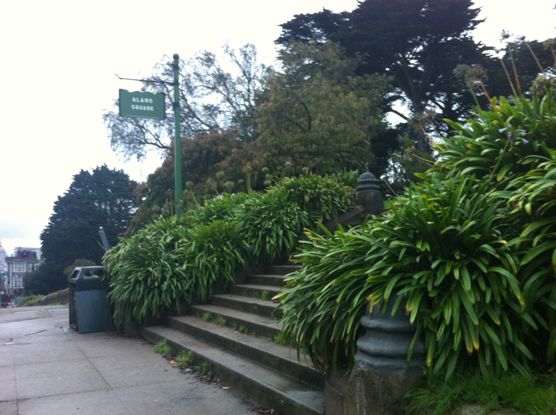
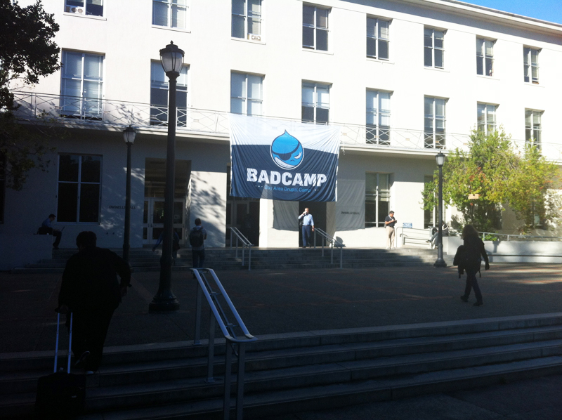
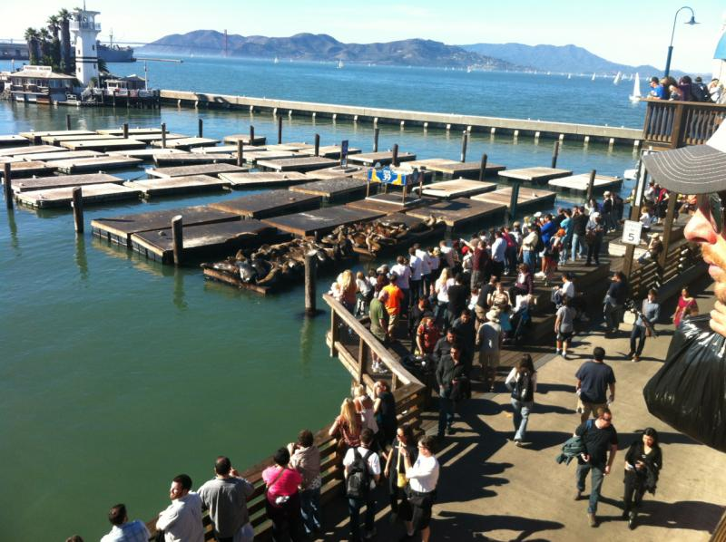

Sittin' on the Dock of the Bay
on
In mid-September 2012, we at OC heard about an upcoming Drupal event at the University of California at Berkeley called Bay Area Drupal Camp (or BADCamp). I'd been to the Bay Area the previous summer to attend the wedding of a long-time friend and my wife and I just fell in love with the area, so when the opportunity to travel back to that part of the world arose, I jumped at it. I quickly contacted my friends (who live right in the heart of San Francisco) and offered to buy them dinner. When they accepted, I quietly mentioned I'd need a ride from the airport and a place to crash for 5 or 6 nights. While their three month old was reluctant to give up his newly decorated room, Baby Henry was not going to get in my way!
Looking through the BADCamp Website, it became apparent that I wasn't going to be spending a whole lot of time wandering around the tourist-friendly Bay Area, as there was such a fantastic offering of learning and networking opportunities that I wouldn't have a whole lot of spare time. Arriving on Hallowe'en, the night before the first day of BADCamp, I found myself in the middle of a proud city celebrating their 2012 World Series Champion San Francisco Giants - there was a daytime parade, which drew hundreds of thousands of people into the downtown core to hoot and holler for their favourite team. While I missed the parade, it was apparent to me that, combined with the spirit of Hallowe'en, this crowd then disbanded to the comfort of their favourite watering holes for the rest of the day because when my friend and I went for an evening walk, we had to make our way through some pretty rowdy streets - think: the exit gates of Ottawa's Bluesfest immediately following Great Big Sea (but dress everyone in Hallowe'en costumes or San Francisco Giants colours, orange and black).
BADCamp started the following morning and I went for an early morning walk from my lodgings near Haight/Ashbury, heading East through the famous Alamo Square, past the San Francisco City Hall and to the Bay Area Rapid Transit (BART) station where I hopped on a train which carried me under the San Francisco Bay, through Oakland, and North up to Berkeley. I walked through the beautiful campus, got lost a few times, and found my way to the Pauley Ballroom in the Martin Luther King Student Union building - this would be my home for the next little couple of days for the UX/UI (User Experience and User Interface) Summit and then for the Mobile Summit.
The UX/UI Summit was one of the highlights of the whole event for me, opening my eyes to a different approach to development. While the end user's experience is always a primary consideration for me when developing a new site or a new feature to add to an existing site, the presentations I heard at the UX/UI Summit gave me a new degree of insight into how much planning and testing should go into a user-friendly deliverable. After the opening introductions and a few resolved technical glitches, Garen Checkley and Becky Gesler gave a presentation on the basic overview of User Experience, focusing on the importance of a conscious approach to organizing the menu and content structure of what will eventually be your website with the end-user in mind.
The next presentation was done by Bojhan Somers who focused on the importance of patterns of UX and UI when developing modules. It can be incredibly annoying to a user who has just installed a module and can't figure out how to configure the options. As someone who spent a little too long in the uncomfortable world of Joomla! development (and by a little to long, I mean about 3-4 months), this is something that I've always appreciated with many Drupal modules - a consistency in module configuration. While my experience as a user trying to configure various modules in Drupal was refreshingly simple, it never occurred to me that this was the direct result of a conscious effort made by the Drupal module developer community and not just a coincidence until I heard Bojhan's presentation. It can be just as incredibly beneficial to the same user if they enable a module, head to the config page and find every option is right where they expect it to be. Its great to know that Bojhan is the UX Maintainer for Drupal 7 as well as Drupal 8.
Following Bojhan's presentation was fellow Canadian, Michael Keara who traveled from Toronto to give a presentation on role-based analysis and design. Using his experience of arriving at the San Francisco Airport as an example of how certain roles can have a varied experience of a particular environment, depending on their "role". For instance, stepping off the plane, his primary goal at the airport was to find the baggage carousel and re-claim his luggage. Following that task, he explained that his role had changed from "Baggage Collector" to "Transportation Finder" as he tried to find his way from the airport to the campus at Berkeley. The idea was that, as developers and designers, we should be positioning elements of the site in ways that benefit targeted user personas in the same way someone who is designing and placing signage in an airport terminal should approach assisting people in their navigation of a new space. It was an interesting analogy and got me thinking about different client "personas", how certain clients may have more advanced levels of technical comfort and/or ability and ensuring that this is considered when selecting modules or designing particular features of any given project.
The next presentation gave me an idea that I'd like to test drive on a few OC projects in the next year or so - UX within your own organization. Tim McCoy delivered a presentation on ways to integrate personal or user testing during development within your own organization. It would be an interesting practice to name 3 or 4 "users", give them each permissions, responsibilities and various degrees of technical know-how and assign one of these "users" to each member of your development team for testing throughout the site-building process, regularly pausing development briefly to test each user's ability to accomplish what their eventual real-world abilities will be.
The next presentation was by Nica Lorber from Chapter Three, a Drupal shop in San Francisco. She spoke about "Page Tables", hard-copy tables that list key elements of each page on the site. The idea behind this is, before you proceed with any design or development, establish the following:
- Name of Page
- Page Goals (business goals)
- Message Focus
- Contextual Calls to Action
- Key Tasks Fulfilled
- Primary target Audience
- Secondary Target Audience
- Content Elements (buckets)
- Content to Keep
- Content to Edit
- New Content
- SEO Keywords
It is fairly easy to see that, by filling out such a table before proceeding, the content, context and purpose of each page would be well-defined before any development begins.
The last presentation of the UX/UI Summit was done by two Acquia employees, Kevin O’Leary and Dharmesh Mistry. This was essentially an update on some key developments in the UX side of Drupal 8, ranging from the admin menu to the node edit page to front-end real-time content editing. It was interesting to see what's coming down the road - things are definitely becoming more user-friendly and the learning curve of drupal is quickly becoming less steep!
My first day at BADCamp was a full one! As I got on the BART train to head back to the city for dinner with Henry's parents and maternal grandparents (who were also visiting that week), I was inspired by what I'd heard and what useful approaches and practices I could bring home with me to share with the OC team. Working with an open-source system like Drupal where the evolution of the actual system is driven by the community of users is in itself exciting, but getting together with 1500+ of these like-minded individuals to discuss this evolution is nothing less than inspiring. In my next blog post, I'll go over everything that I learned at Day 2 of BADCamp, when I attended the Mobile Summit.